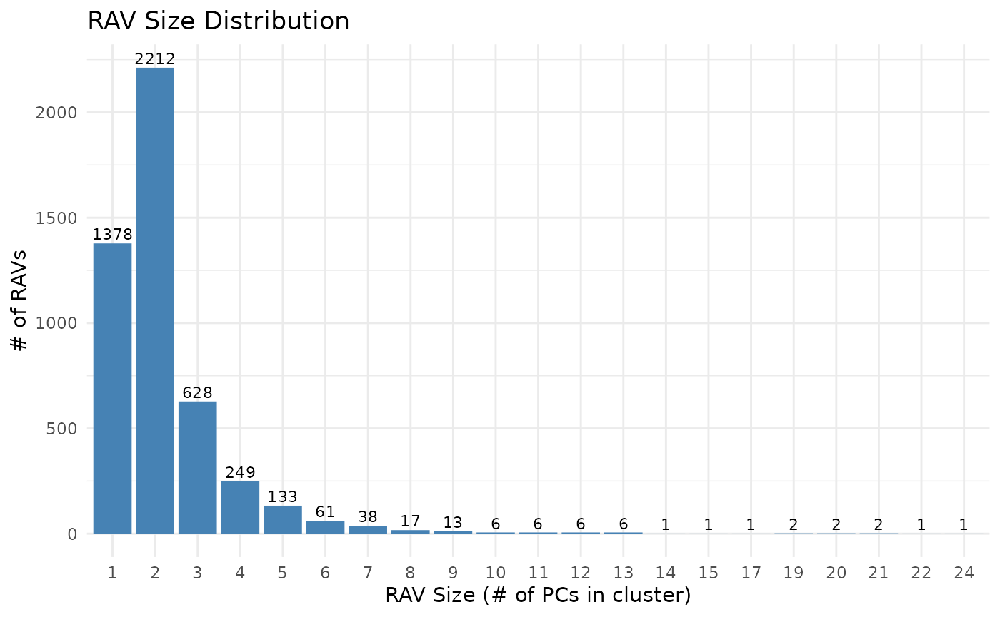
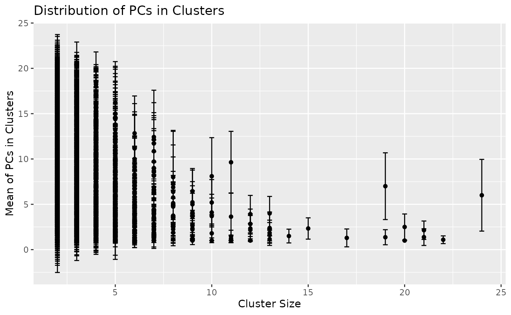
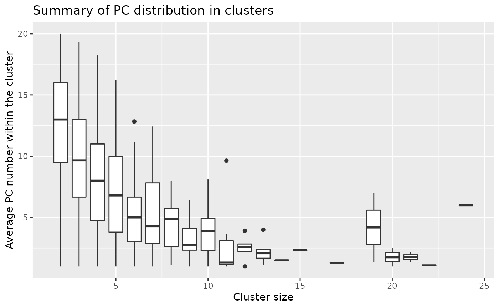
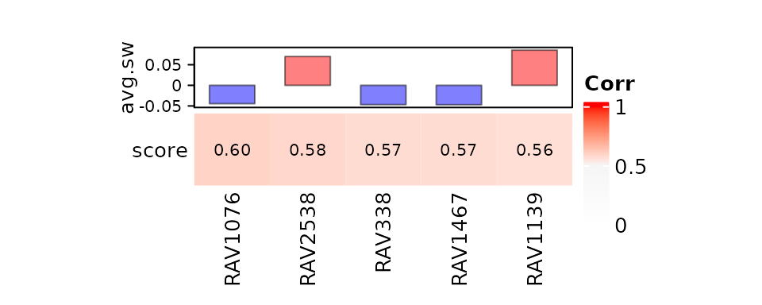
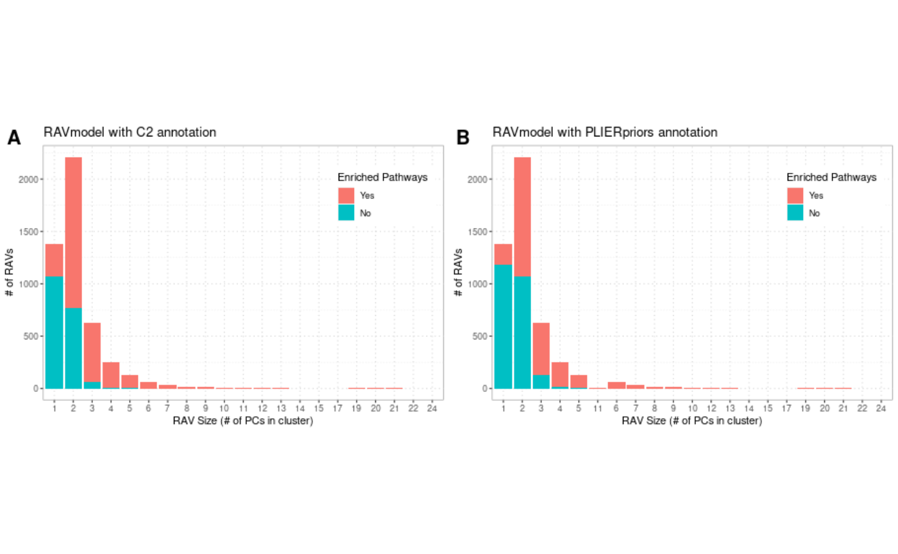

vignettes/model/What_RAVmodel_Is.Rmd
What_RAVmodel_Is.RmdAbstract
Source Code
suppressPackageStartupMessages({
library(GenomicSuperSignature)
library(dplyr)
library(ggplot2)
})
## Warning: package 'GenomicSuperSignature' was built under R version 4.1.3
## If GenomicSuperSignaturePaper is built locally with RAVmodel in inst/extdata
data.dir <- system.file("extdata", package = "GenomicSuperSignaturePaper")
RAVmodel <- readRDS(file.path(data.dir, "RAVmodel_C2.rds"))
RAVmodel_PLIERpriors <- readRDS(file.path(data.dir, "RAVmodel_PLIERpriors.rds"))
RAVmodel
## class: PCAGenomicSignatures
## dim: 13934 4764
## metadata(8): cluster size ... version geneSets
## assays(1): RAVindex
## rownames(13934): CASKIN1 DDX3Y ... CTC-457E21.9 AC007966.1
## rowData names(0):
## colnames(4764): RAV1 RAV2 ... RAV4763 RAV4764
## colData names(4): RAV studies silhouetteWidth gsea
## trainingData(2): PCAsummary MeSH
## trainingData names(536): DRP000987 SRP059172 ... SRP164913 SRP188526
geneSets(RAVmodel)
## [1] "MSigDB C2 version 7.1"
version(RAVmodel)
## [1] "1.1.1"RAVmodel is composed of RAVindex, model’s metadata, and annotation modules linked through RAVs. RAVindex has 4,764 RAVs and 1,378 out of them are ‘single-element’ clusters. By definition a single-element cluster is not a ‘repetitive’ signal, leaving only 3,386 actual RAVs. This means we compressed the information from 44,890 samples into 3,386 RAVs, which is less than 1/10 of the initial number of samples. Also, 417 out of 536 training datasets have 40,746 genes and the other 119 training datasets have 41,255 genes, while the RAVindex uses only 13,934 common genes among the top 90% varying genes of all samples. Thus, our method achieves an efficient data compression, maintaining significant information in ~3% of the initial volume of the training data.
Cluster sizes, which is the number of PCs in RAVs, are strongly skewed to the right. When we exclude single-element clusters, about 65% of RAVs (2,212 out of 3,386) have two PCs and the mean cluster size is 2.759 PCs per RAV with the largest cluster containing 24 PCs. Interestingly, the distribution of PCs in RAVs changes with the cluster sizes: the majority of PCs in one- and two- element clusters are lower PCs, but once clusters have more than two elements, PC distribution starts to skew to the right. This suggests that RAVs from small clusters tend to represent weak and less common signals. Though, we still keep the ‘single-element’ RAVs for two reasons: 1) If any new data is validated by those ‘single-element’ RAVs, they become ‘repetitive’ signals and thus, could lead to new hypotheses and 2) by keeping all RAVs, we include all potential PCs in the RAVmodel and support different use cases. Since metadata associated with all RAVs are readily accessible, end users can filter downstream results based on cluster sizes or other properties.
## Bar plot of the cluster sizes. It ranges from 1 to 24, strongly right-skewed.
x <- metadata(RAVmodel)$size
table(x)
## x
## 1 2 3 4 5 6 7 8 9 10 11 12 13 14 15 17
## 1378 2212 628 249 133 61 38 17 13 6 6 6 6 1 1 1
## 19 20 21 22 24
## 2 2 2 1 1
summary(x)
## Min. 1st Qu. Median Mean 3rd Qu. Max.
## 1.00 1.00 2.00 2.25 2.00 24.00
We check the composition of PCs in different clusters and display the results as bar plots for each cluster size. (Supplementary Figure 10)
We tested whether the top PCs tend to be grouped together forming large clusters. We considered PC numbers as a numeric data points and plotted the mean and standard deviation of PC numbers per cluster.
summary <- as.data.frame(matrix(nrow = ncol(RAVmodel), ncol = 4))
colnames(summary) <- c("RAV", "size", "mean", "sd")
summary$RAV <- paste0("RAV", 1:ncol(RAVmodel))
summary$size <- metadata(RAVmodel)$size
for (i in seq_len(ncol(RAVmodel))) {
cl <- which(metadata(RAVmodel)$cluster == i)
cl_pcs <- metadata(RAVmodel)$cluster[cl]
PCs <- lapply(names(cl_pcs), function(x) {
strsplit(x, "\\.PC") %>% unlist %>% .[2] %>% as.character
}) %>% unlist %>% as.numeric
summary[i,"mean"] <- mean(PCs)
summary[i,"sd"] <- sd(PCs)
}
head(summary)
## RAV size mean sd
## 1 RAV1 6 1.333333 0.8164966
## 2 RAV2 21 2.142857 1.0141851
## 3 RAV3 4 4.500000 1.9148542
## 4 RAV4 7 4.142857 1.5735916
## 5 RAV5 3 5.333333 2.5166115
## 6 RAV6 3 5.333333 0.5773503Larger clusters tend to have higher proportions of top PCs. 
If we take the mean and standard deviation of the above plot: 
Overall, we observed the tendency of larger clusters formed with higher proportions of top PCs.
## Summary table
summaryOfsummary <- dplyr::group_by(summary_sub, size) %>%
summarize(mean_mean = mean(mean), mean_sd = mean(sd))
summaryOfsummary
## # A tibble: 20 × 3
## size mean_mean mean_sd
## <int> <dbl> <dbl>
## 1 2 12.5 3.06
## 2 3 9.74 3.28
## 3 4 8.16 3.33
## 4 5 7.05 3.08
## 5 6 5.12 2.38
## 6 7 5.42 2.48
## 7 8 4.5 2.62
## 8 9 3.33 1.77
## 9 10 3.98 1.97
## 10 11 3.02 1.25
## 11 12 2.51 1.16
## 12 13 2.22 1.13
## 13 14 1.5 0.760
## 14 15 2.33 1.18
## 15 17 1.29 0.985
## 16 19 4.18 2.26
## 17 20 1.75 0.716
## 18 21 1.76 0.967
## 19 22 1.09 0.426
## 20 24 6 3.96We assess the number of enriched gene sets for each RAV. About 40% of RAVs in RAVmodel_C2 and 50% of RAVs in RAVmodel_PLIERpriors do not have any enriched pathway and the majority of them are one- or two- element clusters (Supplementary Figure 11), suggesting that the smaller clusters are less likely to represent biological features. Because there are RAVs annotated with only one input annotation, MSigDB C2 or PLIERpriors, we include all the RAVs to make our model cover diverse annotation databases. We further evaluate the scope of biological features represented by RAVmodel through two model validation measures, pathway coverage and pathway separation, adopted from the previous study. Pathway coverage is defined as the proportion of pathways annotating RAVs out of all the gene set terms provided. Pathway coverage of RAVmodel_C2 is 0.32. The recount2_MultiPLIER has the pathway coverage of 0.42 while the RAVmodel_PLIERpriors which uses the same gene set as recount2_MultiPLIER has 0.64 pathway coverage. Pathway separation is defined as the ability of the signature model to keep non-overlapping signatures that can differentiate biologically similar pathways. Three biological subjects were tested on RAVmodel_PLIERpriors - type I versus type II interferon, neutrophil versus monocyte, and G1 versus G2 cell cycle phases. RAVmodel can successfully separate them either with top one or top five enriched pathways. Detailed analysis is available HERE
We investigated the effect of long intergenic non-coding (LINC) RNA in our model on GSEA annotation. Details of this analysis is available HERE, which also includes pathway coverage analysis.
Redundancy within the cluster is defined as the cluster containing more than one PCs from the same study. The majority of RAVs (78%, 2,628 out of 3,386 non-single-element RAVs) consist of PCs from unique studies. 622 non-single-element RAVs are composed of only one study and 80% of them have no or only one MSigDB C2 pathway enriched.
First, we summarize RAVs with multiple PCs from one study and save it in dup object.
dup <- as.data.frame(matrix(ncol = 4, nrow = ncol(RAVmodel)))
colnames(dup) <- c("RAV", "Dupicated", "Num_duplicated", "Studies_duplicated")
for (i in seq_len(ncol(RAVmodel))) {
## PCs in each cluster
cl_pcs <- which(metadata(RAVmodel)$cluster == i)
## Studies in the given RAV
Projs <- lapply(names(cl_pcs), function(x) {
strsplit(x, "\\.") %>% unlist %>% .[1] %>% as.character
}) %>% unlist
dup[i, 1] <- paste0("RAV", i)
dup[i, 2] <- any(duplicated(Projs))
dup[i, 3] <- sum(duplicated(Projs))
dup[i, 4] <- length(unique(Projs[duplicated(Projs)]))
}
table(dup$Dupicated) # 758 RAVs have PCs from the same study --> remove them?
##
## FALSE TRUE
## 4006 758
table(dup$Num_duplicated) # how many PCs from the same study
##
## 0 1 2 3 4
## 4006 675 70 8 5
table(dup$Studies_duplicated) # how many studies are multiplicated in one RAV
##
## 0 1 2
## 4006 752 6We subset dup to the RAVs with multiple PCs from the same study and saved it in multiPCs. If the number of duplicates PCs and the number of duplicated studies are equal, then there are two PCs from multiple studies. We checked RAVs that have more than two PCs from the same study.
## Check RAVs with more than one PC from a study
multiPCs_ind <- which(dup$Num_duplicated != 0 & dup$Num_duplicated != 1)
multiPCs <- dup[multiPCs_ind,]
## The number of RAVs with more than 2 PCs from a study
multiPCs_ind <- which(dup[,"Num_duplicated"] > dup[,"Studies_duplicated"]) # 77 RAVs
## `dup_RAVs` contains studies contributing an RAV with more than 2 PCs
dup_RAVs_studies <- vector(mode = "list", length = length(multiPCs_ind))
dup_RAVs_PCs <- vector(mode = "list", length = length(multiPCs_ind))
dup_RAVs_gsea <- vector(mode = "list", length = length(multiPCs_ind))
dup_RAVs_clsize <- vector(mode = "list", length = length(multiPCs_ind))
names(dup_RAVs_studies) <- names(dup_RAVs_PCs) <- names(dup_RAVs_gsea) <- names(dup_RAVs_clsize) <- paste0("RAV", multiPCs_ind)
for (i in seq_along(multiPCs_ind)) {
res <- getRAVInfo(RAVmodel, multiPCs_ind[i])
dup_RAVs_studies[[i]] <- res$members$studyName
dup_RAVs_PCs[[i]] <- res$members$PC
dup_RAVs_gsea[[i]] <- res$enrichedPathways
dup_RAVs_clsize[[i]] <- res$clusterSize
}Characteristics of those 77 dup_RAVs are:
length(unlist(dup_RAVs_studies)) # 249 PCs
length(unique(unlist(dup_RAVs_studies))) # only 45 studies
table(unlist(dup_RAVs_gsea)) # 42 RAVs with no enriched pathways
table(unlist(dup_RAVs_clsize)) # 64 are 3-element clustersWe summarized the duplication detail.
dup_RAVs_studies_tbl <- as.data.frame(matrix(nrow = length(dup_RAVs_studies),
ncol = 3))
colnames(dup_RAVs_studies_tbl) <- c("RAV", "Study", "# duplicated")
for (i in seq_along(dup_RAVs_studies)) {
res <- table(dup_RAVs_studies[[i]])
dup_RAVs_studies_tbl[i,1] <- names(dup_RAVs_studies)[i] # RAV
dup_RAVs_studies_tbl[i,2] <- names(res) # Study
dup_RAVs_studies_tbl[i,3] <- res # duplicated number
}
dup_RAVs_studies_tbl$gsea <- unlist(dup_RAVs_gsea)
head(dup_RAVs_studies_tbl)We checked any RAV with both PC1 and PC2 from the same study.
all_dup_RAVs <- which(dup$Dupicated == TRUE)
topPCs_RAVs <- vector(mode = "list", length = length(all_dup_RAVs))
names(topPCs_RAVs) <- paste0("RAV", all_dup_RAVs)
for (i in seq_along(all_dup_RAVs)) {
x <- getRAVInfo(RAVmodel, all_dup_RAVs[i])$members
dup_study <- x$studyName[duplicated(x$studyName)]
res <- all(filter(x, studyName %in% dup_study)$PC %in% c(1,2,3))
topPCs_RAVs[[i]] <- res
}There are 37 RAVs which have both PC1 and PC2 from the same study.
sum(unlist(topPCs_RAVs)) # 37
## [1] 37
which(topPCs_RAVs == TRUE)
## RAV23 RAV40 RAV59 RAV95 RAV206 RAV257 RAV272 RAV311 RAV450 RAV515
## 1 2 6 9 17 19 23 26 43 47
## RAV518 RAV625 RAV654 RAV683 RAV702 RAV887 RAV937 RAV987 RAV1018 RAV1266
## 48 55 57 58 60 88 103 113 116 145
## RAV1303 RAV1345 RAV1406 RAV1455 RAV1528 RAV1726 RAV2058 RAV2112 RAV2686 RAV2902
## 151 155 165 174 179 198 240 243 312 359
## RAV2910 RAV3485 RAV3644 RAV3936 RAV4203 RAV4494 RAV4621
## 361 451 477 529 594 679 710We checked non-single-element clusters containing PCs from only one study.
ns_ind <- which(metadata(RAVmodel)$size != 1)
s_study <- which(sapply(studies(RAVmodel), length) == 1)
single_study_ind <- intersect(ns_ind, s_study)
length(single_study_ind)
## [1] 622We checked the number of enriched pathways for 622 RAVs consist of only one study. 80% of them for RAVmodel_C2 and 82% of RAVmodel_PLIERpriors among 622 RAVs have no or one enriched pathway.
## C2
x <- gsea(RAVmodel)[filterList[[4]]]
x_count <- sapply(x, nrow)
table(x_count)
## x_count
## 0 1 2 3 4 5 6 7 8 9 10 11 12 13 14 15 19 20 22 29
## 314 185 56 24 10 3 7 3 1 1 1 2 2 1 1 1 2 1 1 1
## 30 32 33 53 72
## 1 1 1 1 1
## PLIERpriors
x <- gsea(RAVmodel_PLIERpriors)[filterList[[4]]]
x_count <- sapply(x, nrow)
table(x_count)
## x_count
## 0 1 2 3 4 5 6 7 8 9 10 12
## 401 109 36 31 25 8 4 2 2 1 2 1Overlap with the RAVs mentioned in the manuscript (ind_all).
dup_ind <- which(dup$Dupicated)
commonRAVs <-intersect(ind_all, dup_ind)
for (rav in commonRAVs) {
res <- getRAVInfo(RAVmodel, rav)
print(paste(paste0("RAV", rav), "contains",
res$clusterSize, "PCs from",
length(unique(res$members$studyName)), "unique studies"))
}
## [1] "RAV683 contains 11 PCs from 10 unique studies"
## [1] "RAV868 contains 7 PCs from 5 unique studies"
## [1] "RAV684 contains 19 PCs from 18 unique studies"
## [1] "RAV23 contains 13 PCs from 12 unique studies"To guide the interpretation, GenomicSuperSignature gives a message when the output included any of the following RAVs:
This message is for guidance only and not for definitive interpretation.
## Message example
library(bcellViper)
data(bcellViper)
val_all <- validate(dset, RAVmodel)
heatmapTable(val_all, RAVmodel)
## RAV1076 can be filtered based on GSEA_C2
## RAV2538 can be filtered based on GSEA_C2
## RAV1139 can be filtered based on GSEA_C2
RAVs are constructed from different numbers of PCs, ranging from 1 to 24. Here, we plotted the number RAVs (y-axis) against the cluster sizes (x-axis) to show the distribution of RAV sizes.
We summarized the gene set annotation status of RAVs based on the RAV sizes. We tested two RAVmodels A) RAVmodel annotated with MSigDB C2 and B) RAVmodel annotated with three gene sets provided through the PLIER package. RAVs without enriched pathways are labeled with teal and RAVs with one or more enriched pathways are in red.
## Warning: package 'EBImage' was built under R version 4.1.3
sessionInfo()
## R version 4.1.2 (2021-11-01)
## Platform: x86_64-pc-linux-gnu (64-bit)
## Running under: Ubuntu 20.04.3 LTS
##
## Matrix products: default
## BLAS/LAPACK: /usr/lib/x86_64-linux-gnu/openblas-pthread/libopenblasp-r0.3.8.so
##
## locale:
## [1] LC_CTYPE=en_US.UTF-8 LC_NUMERIC=C
## [3] LC_TIME=en_US.UTF-8 LC_COLLATE=en_US.UTF-8
## [5] LC_MONETARY=en_US.UTF-8 LC_MESSAGES=en_US.UTF-8
## [7] LC_PAPER=en_US.UTF-8 LC_NAME=C
## [9] LC_ADDRESS=C LC_TELEPHONE=C
## [11] LC_MEASUREMENT=en_US.UTF-8 LC_IDENTIFICATION=C
##
## attached base packages:
## [1] stats4 stats graphics grDevices utils datasets methods
## [8] base
##
## other attached packages:
## [1] EBImage_4.36.0 bcellViper_1.30.0
## [3] ggplot2_3.3.5 dplyr_1.0.8
## [5] GenomicSuperSignature_1.3.6 SummarizedExperiment_1.24.0
## [7] Biobase_2.54.0 GenomicRanges_1.46.1
## [9] GenomeInfoDb_1.30.1 IRanges_2.28.0
## [11] S4Vectors_0.32.3 BiocGenerics_0.40.0
## [13] MatrixGenerics_1.6.0 matrixStats_0.61.0
## [15] BiocStyle_2.22.0
##
## loaded via a namespace (and not attached):
## [1] colorspace_2.0-3 ggsignif_0.6.3 rjson_0.2.21
## [4] ellipsis_0.3.2 rprojroot_2.0.2 circlize_0.4.14
## [7] XVector_0.34.0 fftwtools_0.9-11 GlobalOptions_0.1.2
## [10] fs_1.5.2 clue_0.3-60 ggpubr_0.4.0
## [13] farver_2.1.0 bit64_4.0.5 fansi_1.0.2
## [16] codetools_0.2-18 doParallel_1.0.17 cachem_1.0.6
## [19] knitr_1.37 jsonlite_1.8.0 broom_0.7.12
## [22] cluster_2.1.2 dbplyr_2.1.1 png_0.1-7
## [25] BiocManager_1.30.16 readr_2.1.2 compiler_4.1.2
## [28] httr_1.4.2 backports_1.4.1 assertthat_0.2.1
## [31] Matrix_1.4-0 fastmap_1.1.0 cli_3.2.0
## [34] htmltools_0.5.2 tools_4.1.2 gtable_0.3.0
## [37] glue_1.6.2 GenomeInfoDbData_1.2.7 rappdirs_0.3.3
## [40] Rcpp_1.0.8.3 carData_3.0-5 jquerylib_0.1.4
## [43] pkgdown_2.0.2 vctrs_0.3.8 iterators_1.0.14
## [46] xfun_0.30 stringr_1.4.0 lifecycle_1.0.1
## [49] rstatix_0.7.0 zlibbioc_1.40.0 scales_1.1.1
## [52] ragg_1.2.2 hms_1.1.1 parallel_4.1.2
## [55] RColorBrewer_1.1-2 ComplexHeatmap_2.10.0 yaml_2.3.5
## [58] curl_4.3.2 memoise_2.0.1 sass_0.4.0
## [61] stringi_1.7.6 RSQLite_2.2.10 highr_0.9
## [64] desc_1.4.1 foreach_1.5.2 tiff_0.1-11
## [67] filelock_1.0.2 shape_1.4.6 rlang_1.0.2
## [70] pkgconfig_2.0.3 systemfonts_1.0.4 bitops_1.0-7
## [73] evaluate_0.15 lattice_0.20-45 purrr_0.3.4
## [76] htmlwidgets_1.5.4 labeling_0.4.2 bit_4.0.4
## [79] tidyselect_1.1.2 magrittr_2.0.2 bookdown_0.25
## [82] R6_2.5.1 magick_2.7.3 generics_0.1.2
## [85] DelayedArray_0.20.0 DBI_1.1.2 pillar_1.7.0
## [88] withr_2.5.0 abind_1.4-5 RCurl_1.98-1.6
## [91] tibble_3.1.6 crayon_1.5.0 car_3.0-12
## [94] utf8_1.2.2 BiocFileCache_2.2.1 tzdb_0.2.0
## [97] rmarkdown_2.13 jpeg_0.1-9 GetoptLong_1.0.5
## [100] locfit_1.5-9.5 grid_4.1.2 blob_1.2.2
## [103] digest_0.6.29 tidyr_1.2.0 textshaping_0.3.6
## [106] munsell_0.5.0 bslib_0.3.1{kind=link}